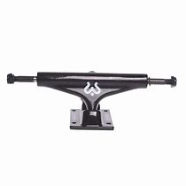

Las partes de los skates

Los ejes
Ejes (Trucks)
Por debajo de las tablas de Skateboard vienen dos ejes que ayudan a conectar con las ruedas y a poder girar. Se trata de un cuerpo de calamina (normalmente) formados por una base atornillada con 4 tornillos a la tabla, el hanger que es la pieza con la que se grinda, la cual está unida a la base por un tornillo principal o más conocido como Kingpin, dos gomas para amortiguar y ayudar a girar, y por último el Axle que son las piezas de acero donde se colocan las ruedas.
Respecto a las gomas las podemos encontrar de diferentes durezas que dependiendo de nuestro estilo se recomiendan unas más que otras. Si vamos a meternos en Skatepark, half-pipes o piscinas lo mejor es usar gomas blandas que nos permitan giros más complicados y continuos, aunque serán más inestables. Sin embargo, si vamos a dedicarnos más a street las gomas duras son las adecuadas al ser más estables para realizar los trucos, pero perderemos potencia de giro.
En relación a la anchura, los ejes van desde 5 a 5,25 pulgadas , si es de mayor tamaño están enfocados más a hacia las tablas Longboard. Un dato a tener en cuenta al elegirlos con este aspecto es la anchura de la tabla que tenemos, no deben quedar ni muy estrechos ni muy anchos en consideración con nuestro skate.
En cuanto a las alturas se pueden clasificar en bajos, medio o altos. La diferencia reside en que cuanto más altos sean nos permitirán realizar mejor los giros al haber más espacio hasta que la tabla choca con la rueda mientra que cuanto más bajos es mejor para realizar los trucos en street.
·Las partes del skate
·La tabla
·La lija
·Los rodamientos
·Las ruedas